Swift Concurrency
1. Introduction à la concurrence
1.1 Qu'est-ce que la concurrence ?
La concurrence en programmation est la capacité à exécuter plusieurs tâches simultanément, améliorant les performances et la réactivité des applications. En iOS, cela devient crucial pour :
- Maintenir une interface utilisateur fluide
- Traiter des opérations longues sans bloquer le thread principal
- Optimiser l'utilisation des ressources du processeur
1.2 Évolution historique
Avant Swift Concurrency
- Callbacks complexes
- Gestion manuelle des threads
- Code difficile à lire et maintenir
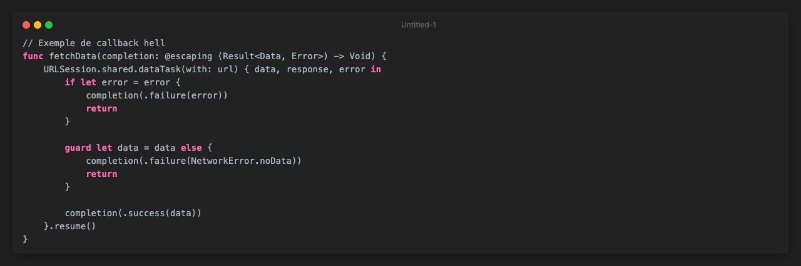
Avec Swift Concurrency
- Code linéaire et lisible
- Gestion automatique des threads
- Mécanismes de synchronisation intégrés
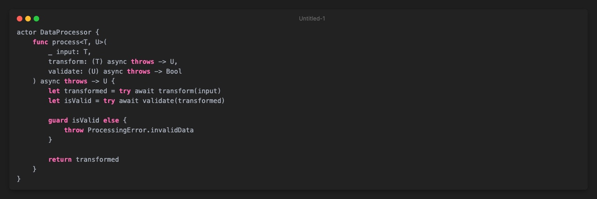
2. Concepts fondamentaux
2.1 Async/Await
Principe de base
asyncmarque une fonction comme pouvant être suspendueawaitindique un point potentiel de suspension
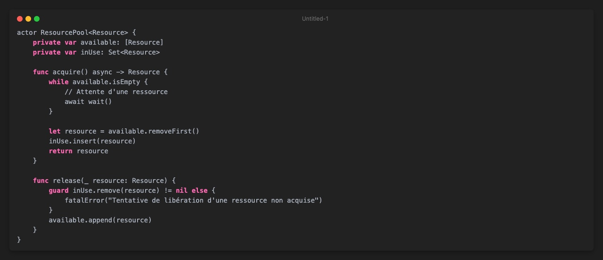
2.2 Task : gestion fine des opérations
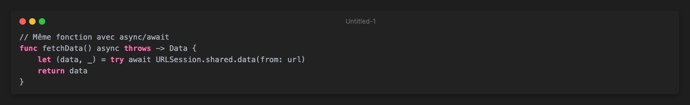
2.3 TaskGroup : parallélisation avancée
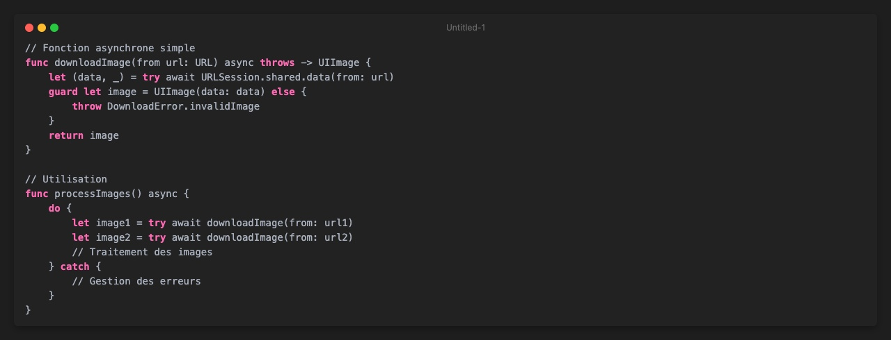
3. Gestion des conditions de course
3.1 Comprendre les conditions de race
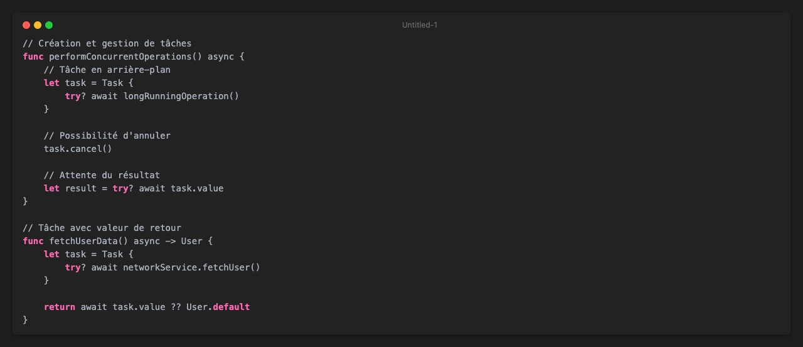
3.2 Mécanisme interne des actors
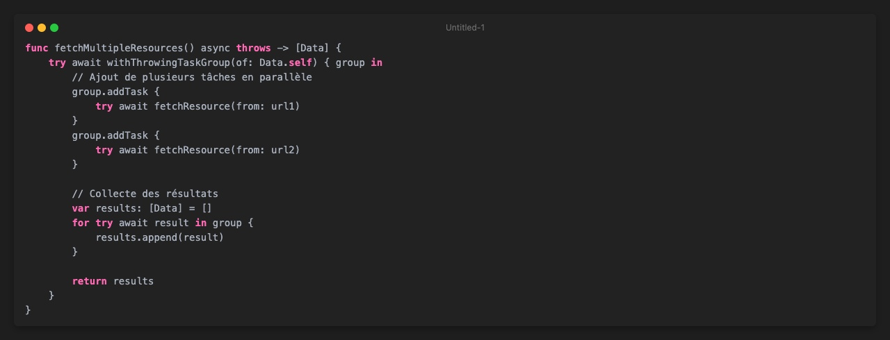
4. Opérations asynchrones complexes
4.1 Gestionnaire de ressources avancé
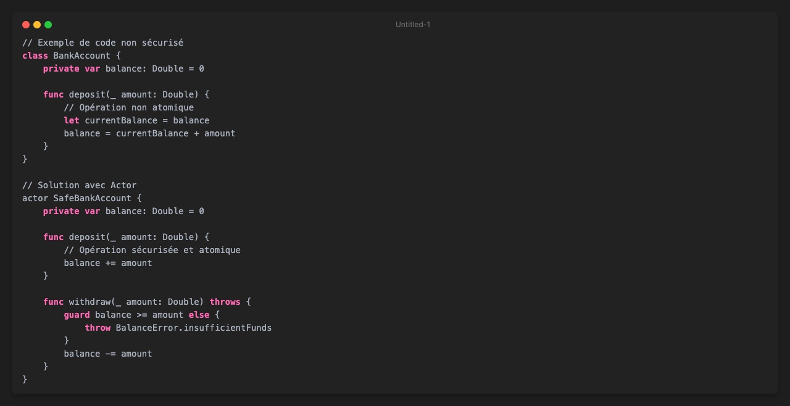
4.2 Gestion avancée des erreurs
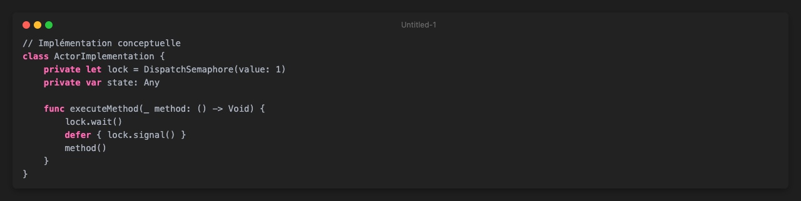
5. Modèles de conception avancés
5.1 Pipeline asynchrone
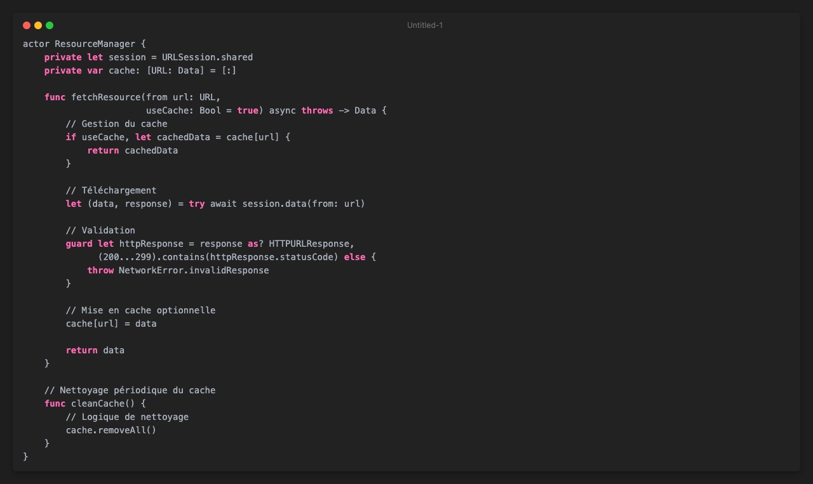
5.2 Gestion de ressources concurrentes
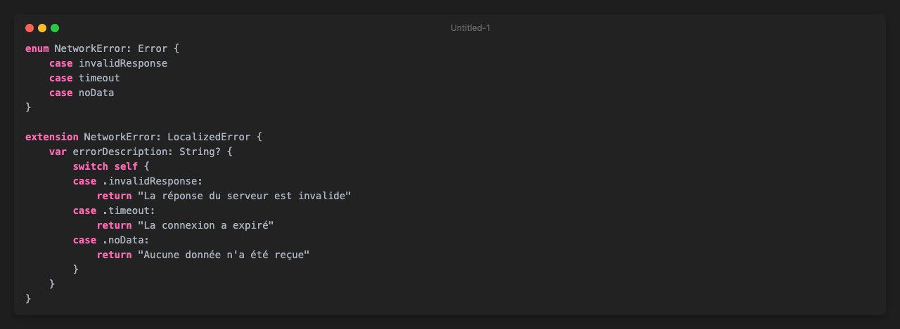
6. Bonnes pratiques et pièges à éviter
-
Minimiser la complexité
- Garder les méthodes
asynccourtes - Éviter les opérations bloquantes
- Utiliser des abstractions claires
- Garder les méthodes
-
Gestion des erreurs
- Toujours gérer les erreurs potentielles
- Utiliser des enums personnalisés pour les erreurs
- Fournir des descriptions claires
-
Performance
- Limiter la création excessive de tâches
- Utiliser
TaskGrouppour les opérations parallèles - Surveiller l'overhead de la concurrence
7. Conclusion
Swift Concurrency représente une approche moderne et élégante de la programmation asynchrone. En offrant des mécanismes intégrés de gestion des tâches, des ressources et de la synchronisation, il simplifie considérablement le développement d'applications iOS performantes et réactives.
Ressources complémentaires
Restez à jour, continuez à apprendre et n'hésitez pas à expérimenter !